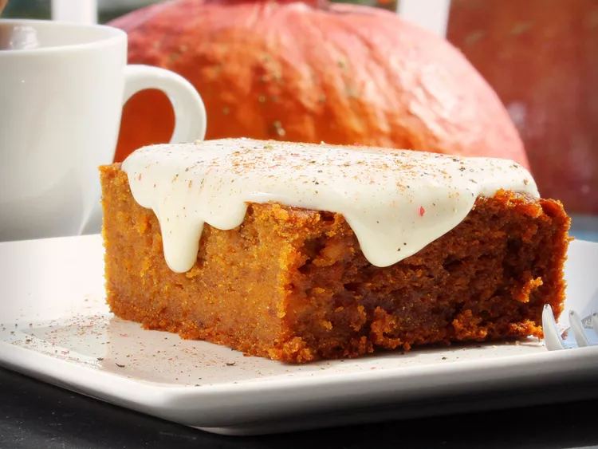

Pumpkin Squares

Description
These pumpkin squares are a cakelike version of a pumpkin pie filling. Similar in flavor to a pumpkin pie but made without a crust, these squares are a sweet treat during the holidays or any time of the year. Top with cream cheese frosting or a sweet glaze for a little extra decadence.
Ingredients
- 1 (15 ounce) can pumpkin puree
- 2 cups white sugar
- 1 cup vegetable oil
- 4 large eggs
- 2 cups all purpose flower
- 2 teaspoons ground cinnamon
- 2 teaspoons baking powder
- 1 teaspoon baking soda
- 1/2 teaspoon ground cloves
- 1/2 teaspoon ground ginger
- 1/2 teaspoon ground nutmeg
- 1/2 teaspoon salt
Home